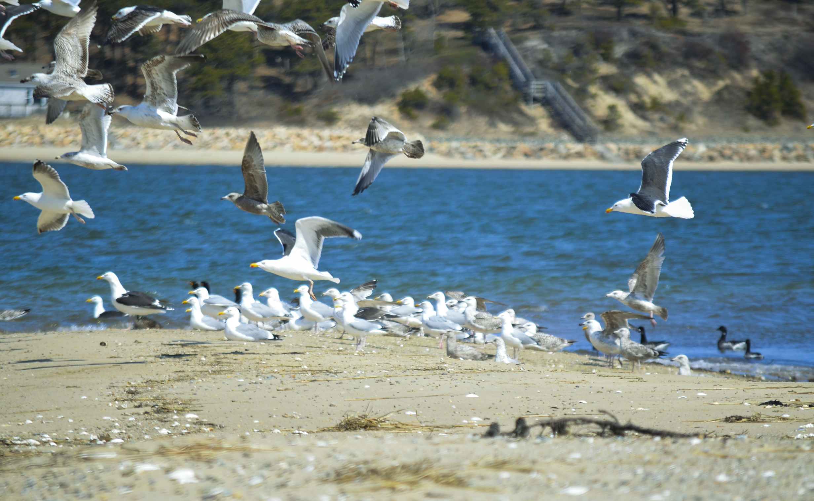
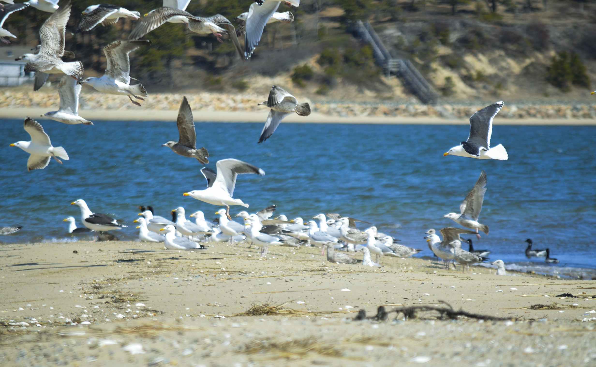
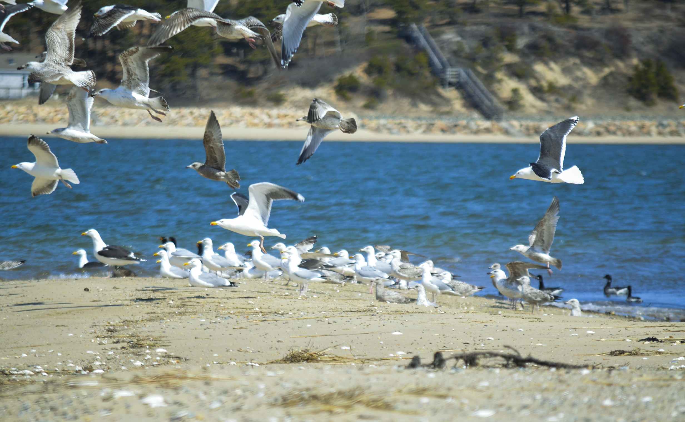
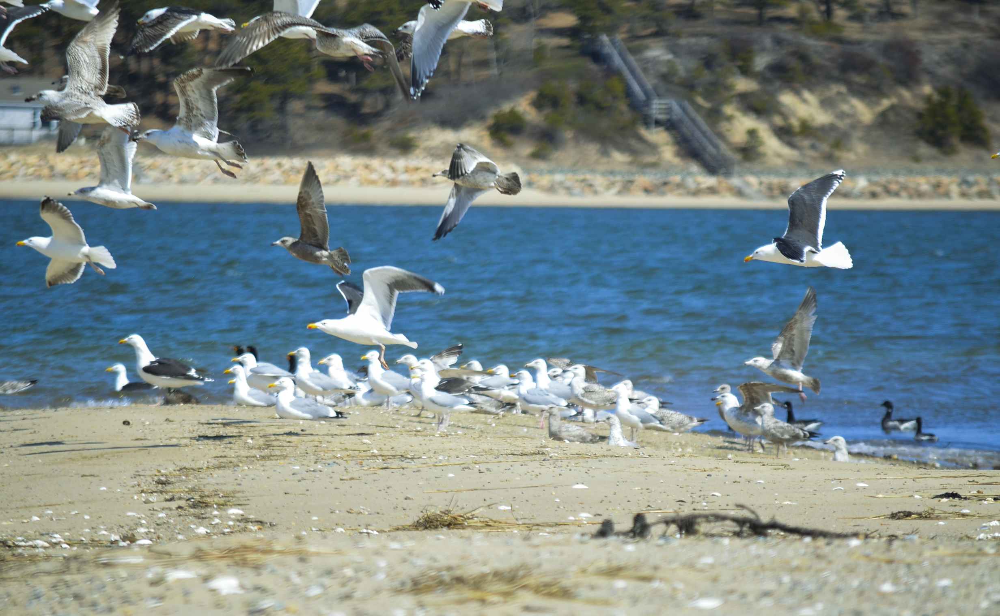

I'v been fortunate enough to roadtrip around the United States a few times. These images reflect those journeys.
Project type: Graphic design Technologies used: Adobe Photoshop CS6, Adobe InDesign
 


